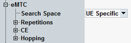

eMTC Settings
The "eMTC" node is only visible if eMTC is enabled, see "eMTC". The node contains settings that are only relevant for enhanced machine type communication (eMTC).
Option R&S CMW-KS590 is required for eMTC.

eMTC settings
For parameter descriptions, refer to the subsections.